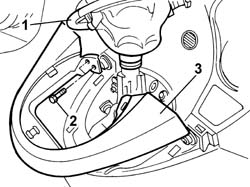
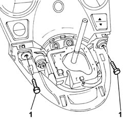
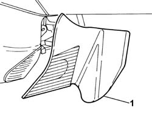
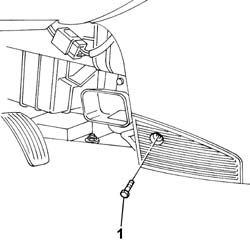
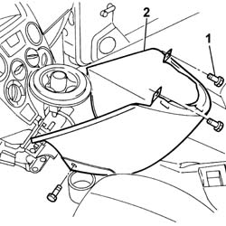
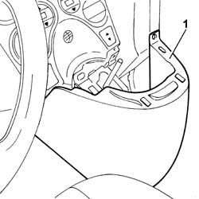

7040A28 TRIM on gearbox control panel - R.R.
- Path
- Procedures > 70 FITTINGS > 7040 BODYSHELL INTERIOR TRIMS AND FITTINGS > 7040A passenger compartment trim > 7040A28 TRIM on gearbox control panel - R.R.
- Kind
- repair procedure (removal / refitting; the operation number is the code)
- Applies to
- all engines; all production periods
- Interactive page
- https://sloeber94.github.io/elrnDB-fPnd/en/#/2753185
Applies to: all engines; all production periods
 Removing
Removing
 Refitting
Refitting1. Release the gear lever boot.
2. Undo the upper fixing bolts.
3. Remove the upper trim releasing it from the fastening clips.

Applies to: engines: 1.2 8v; all production periods; only with equipment: Smart gearbox
Removing
Refitting2127A20 cover of control lever/handle for manual gearbox with hydraulic selection - r r
2127A16 panel of control lever for manual gearbox with hydraulic selection - r r
1. Undo the upper fixing bolts.

Applies to: all engines; all production periods; only with equipment: Air Conditioner
1. Release and remove the bottom right trim.

Applies to: engines: 1.2 8v; all production periods; only with equipment: Smart gearbox
1. Undo the side fixing bolt on both sides.

Applies to: all engines; all production periods; only with equipment: Air Conditioner
1. Undo the retaining bolts.
2. Remove the trim on the gear control panel.

Applies to: engines: 1.2 8v; all production periods; only with equipment: Smart gearbox
1. Remove the trim for the gear control panel from the housing.

Applies to: all engines; all production periods
Refitting
RemovingPosition the trim on the gear control panel and tighten the fixing bolts.
Fit the bottom right trim and check that it is secure.
Position the upper trim, secure it using the clips and tighten the fixing bolts.
Place the gear lever boot in position.
Applies to: engines: 1.2 8v; all production periods; only with equipment: Smart gearbox
Refitting
RemovingFit the trim for the gear control unit in place.
Tighten the upper and side bolts fixing the trim to the gear control panel.
2127A16 panel of control lever for manual gearbox with hydraulic selection - r r
2127A20 cover of control lever/handle for manual gearbox with hydraulic selection - r r
Topics linked from this page (2)
- 2127A16 panel of control lever for manual gearbox with hydraulic selection - r r
- 2127A20 cover of control lever/handle for manual gearbox with hydraulic selection - r r
Topics that link to this page (27)
- 2125C22 gear lever and mount - r r
- 2125C30 GEAR ENGAGEMENT CABLE - R R
- 2127A12 hand lever of manual gearbox with hydraulic selection - r r
- 3330D23 REACTION ROD ON BRAKE SERVO MASTER CYLINDER R R FOR RHD VERSIONS
- 3330D70 IDLER SHAFT ON BRAKE SERVO R R FOR RHD VERSIONS
- 3330D74 IDLER SHAFT MOUNT ON BRAKE SERVO R R FOR RHD VERSIONS
- 5010D17 mixed air upper sensor - r r
- 5010D19 lower mixed air temperature sensor - r+r following electrical wiring check
- 5020A10 heater box - r+r
- 5020A30 heater fan motor - r+r
- 5020A44 heater fan motor resistor - r+r
- 5020A50 heater radiator - r+r
- 5040B64 sensor on evaporator for a/c ecu - r + r
- 5040C10 air conditioner box - r+r
- 5040C26 evaporator unit condensate collection tank - r r
- 5040C30 fan motor - r+r
- 5040C50 air conditioner heater radiator - r+r
- 5040C64 a/c evaporator - r+r
- 5040D14 ecu with automatic air conditioner pushbuttons - r+r
- 5040D75 Air conditioning recirculation flap control MOTOR - R.R.
- 5505A90 rear wiring bundle - r r or replace
- 5505C26 bonnet wiring - r r
- 5505C34 intergrated instrument under facia front air bag wiring - r r
- 7005A24 front side door r r
- 7040A10 instrument facia trim - r+r
- 7040A97 facia trim support beam - r r
- 7040L10 cabin floor carpet - r r